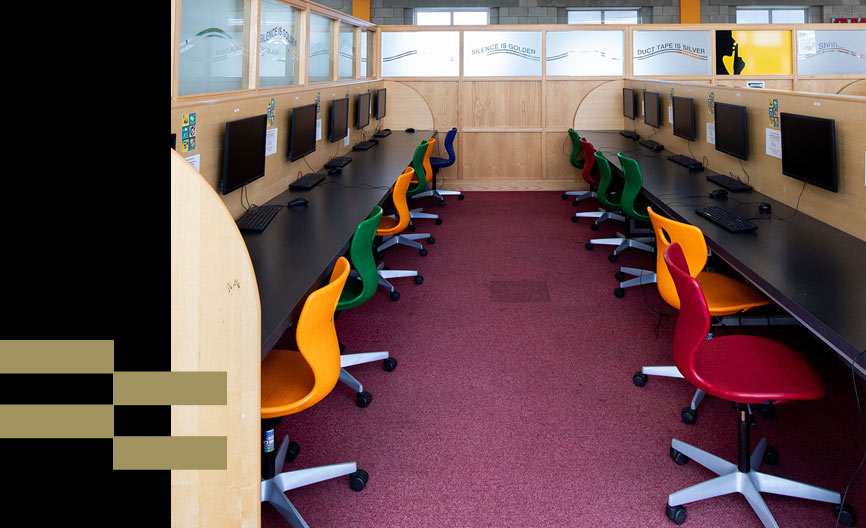
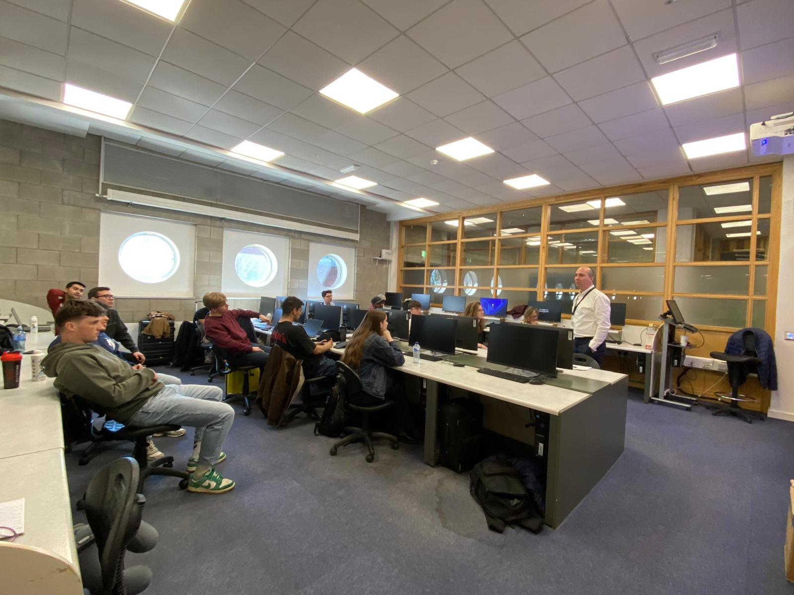
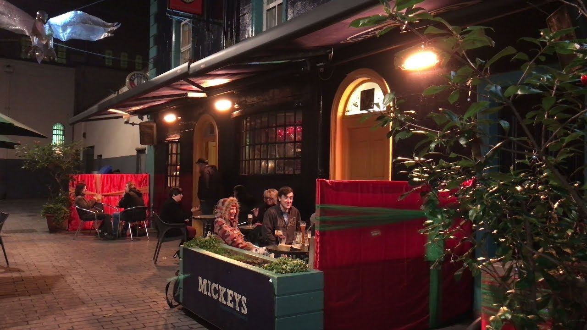

For the entirety of this week, I had the pleasure of spending my time alongside my close friends Bram and William.
On Thursday morning, we caught the bus at around 08:30 and arrived at school just before 9 o'clock.
Since the classroom wouldn't open until 10:30, we made our way to the computer lab and used the extra time productively, continuing to work on our projects.

Once 10:30 arrived, all the students involved in the project gathered together, and each group resumed work on their assignments.
My group was focused on implementing several additional features into our console-based mini-games program, which we had been developing in Python throughout the week.
It was a satisfying process, seeing the project slowly come together with each new addition.

Around 1 pm, nearly all the students decided to take a well-deserved break and headed to the cafeteria together, where we enjoyed a delicious meal of fries and chicken smothered in curry sauce.
It was a fun and lively atmosphere, with everyone sharing stories and laughs before heading back to work.
By 2 pm, we returned to the classroom to wrap up our remaining code-related tasks and shifted our focus toward preparing our PowerPoint presentations for the following day.
The afternoon passed quickly, and before we knew it, 5 pm had arrived.
We packed up our things, left the school, and made our way to a pub in the city centre for a few well-earned drinks.

After a couple of rounds, we decided to take one final stroll through the streets of Limerick, soaking in the atmosphere and savouring our last moments in this wonderful city.
Once we had thoroughly enjoyed our evening walk, we headed back to the hotel, where we unwound in the swimming pool and sauna — a perfect way to relax after a long and productive day.
To round off the evening, we went out for a late dinner before settling into the hotel garden with a tasteful Irish beverage in hand, reminiscing about the incredible week we had shared together.
It was a fitting end to what had truly been an unforgettable experience.
Written by Jonas Vandenberghe